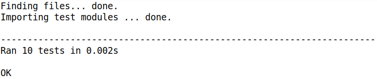

Python Code Generation for SCTUnit with unittest
This example demonstrates how to generate unittests from SCTUnit and how to set everything up. The test program can be executed and integrated in your build process easily.
Example application
The example application and SCTUnit test is based on the previous example Testing State Machines with SCTUnit. You can check it out in the example wizard or visit on our homepage:
Testing State Machines with SCTUnit.

Test Code Generation
Code generation for Python code has already shown step by step in the previous example Python Code Generation. You can check it out in the example wizard or visit on our homepage: Python Code Generation. This example contains a code generator python.sgen file for generating the state machine code, which is required. Additionally to that, the tests folder contains a code generator file for the SCTUnit file: python_test.sgen. The generator ID for this example is sctunit::python. You can right click the generator file and generate the code artifacts. This will generate the unittest, which can be executed as unittest test. If you don't use pydev, you can run the test via console:
python3 -m unittest test_lightswitchtest.py
Test execution
After generating the code, the test file test_lightswitchtest.py can be executed as unittest.
